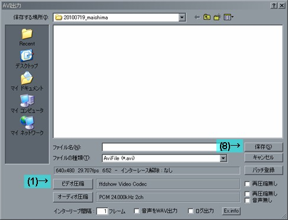
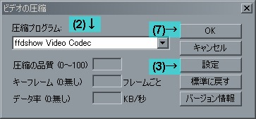

 

- 「ビデオ圧縮」ボタンをクリック
- 圧縮プログラムのリストから「ffdshow Video Codec」を選びます
- 「設定」をクリック
- 「Encoder」をタブをクリックします
- 「エンコーダ」「モード」「品質」を図のとおりに設定．「品質」の数値は，ファイルサイズと画質のトレードオフになりますので，いろいろ試してみてください．数値が高いほど画質がよいですが，ファイルサイズが大きくなります．
- OK をクリック
- OK をクリック
VSD は，フリーの動画編集ソフトとして有名な AviUtl のプラグインモジュールとして動作しますので，別途 AviUtl が必要です．
| vsd_filter_gps.auf | AviUtl 用プラグイン本体です |
| manual.url | 今ごらんのマニュアルです |
| avisynth\vsd_filter_gps.dll | AviSynth 用プラグイン DLL です．AviSynth を使用しない場合は必要ありません． |
最低限のインストールは以上ですが，AviUtl でさまざまな動画ファイルをオープンするために，必要に応じて以下をインストールしてください．(これ以下は VSD というより AviUtl の設定になりますので，より詳細な説明は他の解説サイトを参照してください)
以下では，設定のコツを説明します．
「ログ位置調整」スライダを調整する場合は必ずメインスライダなどを使ってずれがあるシーンを表示させてから，「ログ位置調整」スライダを調整してください．
再生ウィンドウの映像とログ位置調整スライダは連動していませんので，(メインウィンドウで違うシーンを表示させたまま) 再生ウィンドウでずれがあるシーンを表示しつつログ位置調整スライダを調整しても，望む結果は得られません．
※「ログ位置調整」スライダは一度に約±10分しかずらせません．それ以上ずらしたいときは，メインスライダで 1フレーム分映像を進めると，「ログ位置調整」スライダが 0 に戻ります．
c1 = last BilinearResize( last.width / 3 / 8 * 8, last.height / 3 / 8 * 8 ) Overlay( c1, last, 0, 0 )ここでは簡単に説明するため同じ動画を入れましたが，もちろん別の動画を入れることもできます．
VSDFilter (clip, string "gps_file", string "font", int "video_start", int "video_end", int "gps_start", int "gps_end", int "speed_meter", int "map_length", int "map_size", int "map_angle", int "g_length", int "start_width", int "aspect_ratio", int "lap_time", int "meter_pos", int "meter_cx", int "meter_cy", int "meter_r", int "g_scale", int "meter_adjust", int "font_size", int "lap_start", int "lap_end", string "mark")
| パラメータ名 | 説明 |
|---|---|
| string "gps_file" | 読み込む GPS ログファイル名 (*.nmea *.dp3) を指定します． |
| string "font" | 表示に使用するフォント名を指定します． |
| int "video_start" int "video_end" int "gps_start" int "gps_end" | 動画とログの同期情報です． video_start の時刻の映像が gps_start の時刻のログに， video_end の時刻の映像が gps_end の時刻のログに対応することを示します． |
| int "speed_meter" | 設定スライダの「最大スピード」と同じ値・意味です． |
| int "map_length" | 設定スライダの「走行軌跡長さ」と同じ値・意味です． |
| int "map_size" | 設定スライダの「走行軌跡サイズ」と同じ値・意味です． |
| int "map_angle" | 設定スライダの「走行軌跡回転」と同じ値・意味です． |
| int "g_length" | 設定スライダの「G軌跡表示長さ」と同じ値・意味です． |
| int "start_width" | 設定スライダの「計測地点幅」と同じ値・意味です． |
| int "aspect_ratio" | 設定スライダの「アスペクト比」と同じ値・意味です． |
| int "lap_time" | 1を指定すると，ラップタイムが表示されます． |
| int "meter_pos" | 1を指定すると，メーターパネルが右に表示されます． |
| int "meter_cx" | メーターパネル中心の x 座標を指定します． |
| int "meter_cy" | メーターパネル中心の y 座標を指定します． |
| int "meter_r" | メーターパネルの半径を指定します． |
| int "g_scale" | G ボールがメーターパネル外周にあるときの G の値 * 1000 を指定します． 例えば 1500 を設定した場合，1.5G のときに G ボールがメーター外周に位置します． |
| int "font_size" | フォントサイズをピクセル数で指定します． |
| int "font_attr" | 1: 太字 2:斜体 3:太字+斜体 を指定します． |
| int "lap_start" | ラップタイム表示の開始ラップ数を指定します． |
| int "lap_end" | ラップタイム表示の終了ラップ数を指定します． |
| string "mark" | 簡易ラップタイム計測で，マークしたフレーム番号を「,」で区切ってつなげた文字列を指定します． |

| v1.06q | ・ラップタイム手動計測にジムカーナ用のモードを追加 |
| v1.06p | ・Windows7 での設定ダイアログ表示を調整 |
| v1.06o | ・1Hz 等周期が長い GPS ログで，停車中もスピードが 0km/h にならないことがあるのを修正 |
| v1.06n | ・フォント選択ダイアログで，TrueType フォント以外を選択できないようにした ・太字・斜体を正式サポートし，*.cfg に font_attr パラメータ追加 |
| v1.06m | ・フォントアンチエイリアスを有効にし，特に解像度が低い動画でのフォントの見栄えを改善した ※フォント・環境によっては見栄えが変わらない場合もあります |
| v1.06l | ・Windows7 等でデフォルトのフォント表示が乱れるのを修正 |
| v1.06k | ・ラップタイム自動計測モードで不正終了する場合があるのを修正 |
| v1.06j | ・同期作業を簡略化した ・いつからか，AviUtl のサイズ変更フィルタが効かなくなっていたのを修正 |
| v1.06i | ・走行軌跡の G 色分けが緑になりにくいので，そのログの最大加速／減速 G のときに緑／赤になるようにした |
| v1.06h | ・走行軌跡の G 色分けが逆になってた |
| v1.06g | ・走行軌跡の G 色分けを縦 G のみで色分け (ブレーキングポイントがわかりやすいかと思って) |
| v1.06f | ・自動計測モードで M キーを押したとき，他のマークを全部解除するようにした |
| v1.06e | ・G 長さ = 0 のとき G 数値が出てなかったのを修正 ・その他細かい bux fix |
| v1.06d | ・横 G の演算に GPS の方位データを使用しないようにすることで，横 G の乱れを改善した(?) →Photomate887 は，進行方向が真北のときに正しくない方位を記録するようです． |
| v1.06c | ・*.cfg ロード時に不正終了する場合があるのを修正 |
| v1.06b | ・速度・方位が記録されていない NMEA ファイルに対応 ・タイム差分表示の精度を改善 |
| v1.06a | ・細かいバグ修正 ・default フォントを Arial にしてみた |
| v1.06 | ・設定ダイアログを見直し |
| v1.05 | ・解像度によってフォントの大きさを変え，高解像度の動画でのメーターパネルの見栄えを改善した． ・フォントを変更可能にした (方法わっかりにくいけど) ・[AviSynth] font パラメータ追加 |
| v1.04c | ・解像度の小さい動画で同期情報のフォントサイズが小さくならないバグ修正 |
| v1.04b | ・2本に分かれているスライダバーを 1本にした ・同期情報の表示を変更 |
| v1.04a | ・タイム計測の精度をちょびっと向上 ・ラップタイム履歴の表示順序をまともにした ・直線描画ルーチンの微妙なバグを修正 |
| v1.04 | ・長い動画を扱えないことがあったので修正 |
| v1.03 | ・ラップタイム自動計測モードを追加 |
| v1.02 | ・*.dp3 で時刻を読み誤る可能性があったのを修正 |
| v1.01 | ・*.dp3 で走行軌跡の縦横比がおかしかったのを修正 |
| v1.00 | ・*.dp3 (LAP+ 用ログファイル) をリードできるようにした ・AviSynth 用プラグイン追加 |
| βv0.92 | ・メーターパネルのアスペクト比変更設定を追加 ・4G 以上の横 G は異常なデータとみなし描画対象から外した |
| βv0.91 | ・横G の動きが変になる場合があるのを修正 ・スピードメーターに対して G ボールの動きが進んでいたのを修正 |
| βv0.90 | 最初のバージョン公開 |